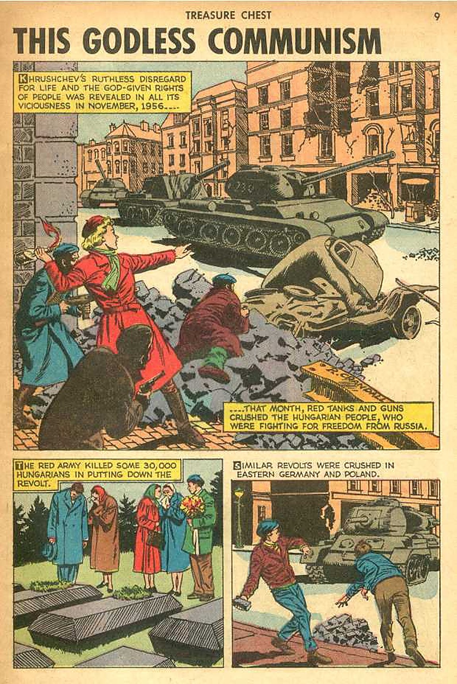

You're the fact-checker. For each part: read the page on the left → get the check right → then a second check or 1–2 sentences. Done = 4 green parts, then turn in at the bottom.
Content note: These are real American comics from 1960 and 1961, made to warn kids about communism. They are one-sided on purpose. Page 1 shows a revolt crushed by tanks and graves of the dead.
Word help (tap to open)
- Revolt = when people rise up against their government
- Stasi = East Germany's secret police, who spied on its own people
- Khrushchev = leader of the Soviet Union, 1953–1964
- Gorbachev = leader of the Soviet Union, 1985–1991
- Warsaw Pact = the military team of the USSR and its Eastern European countries
- Solidarity = a giant workers' union in Poland that stood up to the communist government
- Propaganda = a message made to push you to feel or believe one thing

Click the page to make it bigger.
Turn in your work
Your work saves on this device, so you can come back later. Your teacher sees it after you turn it in.
Comics: “This Godless Communism,” Treasure Chest of Fun and Fact, Vol. 17 (1961–62), Geo. A. Pflaum, Publisher, Dayton, Ohio, art by Reed Crandall (reader pages 1 and 4, from Parts 9 and 8); The Red Iceberg (1960), Impact Publications, St. Paul, Minnesota (reader pages 2 and 3). Scans: Internet Archive. Shown as historical sources for classroom study.